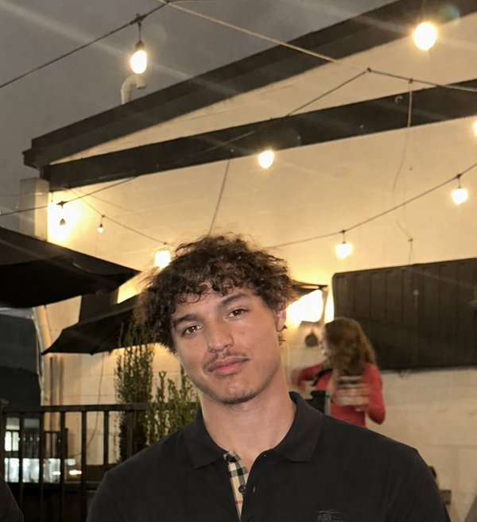

Introduction
I understand that this is a public document, and I won't put anything here I wouldn't want anyone to see. - A.R. 9/13/2026
Aaron Reyes ~ Ambitious Armadillo

Hi, my name is Aaron Reyes. I'm a junior at UNC Charlotte majoring in Computer Science with a concentration in AI, Robotics & Gaming, and a minor in Mathematics. Outside of class I run my own supplement brand, and I'm working toward a career in AI sales. I'm looking forward to building real web projects this semester.
- Personal Background: I'm originally from New York and moved to Charlotte for school.
- Professional Background: I hold an active real estate license and have a background in real estate sales. I also founded and run Radiant Roots, a supplement brand, which I handle end to end: product, content, and sales.
- Academic Background: Computer Science, B.S. at UNC Charlotte, concentration in AI, Robotics & Gaming, minor in Mathematics. Junior, graduating in 2028.
- Primary Work Computer: A laptop running Windows 11.
- Primary Work Location: My apartment.
- Alternate Computer & Location: A campus computer at Atkins Library.
- Courses I'm Taking & Why:
- ITIS 3135 - Front-End Web App Development: Major requirement, and I want to be able to build and ship a functional website on my own.
- ITIS 3200 - Intro to Information Security & Privacy: Core security course for my degree, and a solid foundation for understanding how systems get broken.
- ITIS 4214 - Usable Security and Privacy: I'm interested in the human side of security: why people ignore warnings and make risky choices even when the tech works.
- ITSC 2181 - Intro to Computer Systems: Required for my degree; I want to understand what's happening underneath the code I write.
- Funny/Interesting Item to Remember Me by: My dog and I have the same birthday.
"The world is yours."
~ Scarface